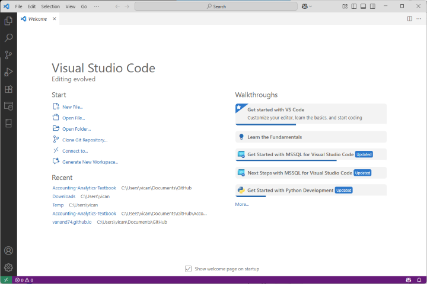
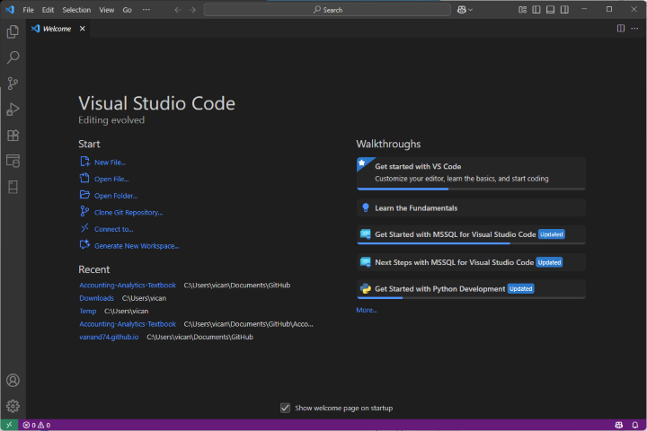
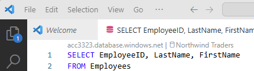
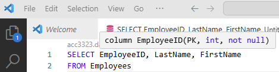
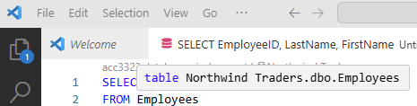
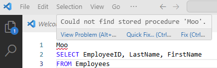
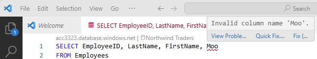
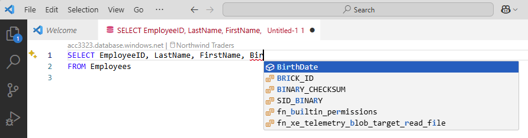
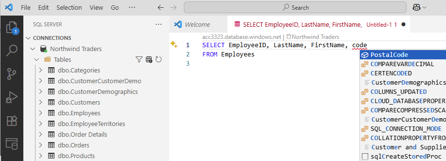
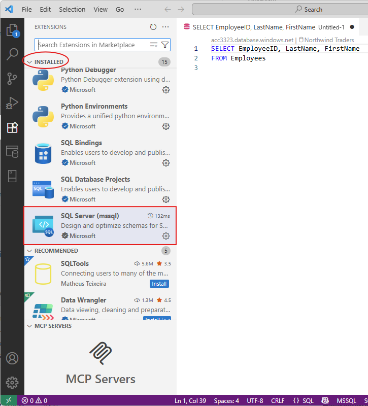

Visual Studio Code Overview#
There is a video that covers everything in this chapter. Use the video if you prefer.
https://www.youtube.com/watch?v=rm1iMrSYbLU
What is Visual Studio Code?#
Visual Studio Code (VS Code) is a word processor for programmers. Just like Microsoft Word and Google Docs are designed for creating documents, VS Code is designed for creating, testing, debugging, and running computer code. At the time of this writing, VS Code is the most popular code editor in the world.[1]
Changing the Color Theme#
Before discussing some of its features, let’s make VS Code visually appealing. VS Code can be customized, and one of the most common customizations is the colors. When you installed VS Code, it likely defaulted to either a built-in light or dark theme. I provide pictures of both below.
Light Theme#

Dark Theme#

You can choose whichever of these themes that you prefer. You can also choose from other built-in themes or download a new theme.
To set the color theme, go to the File menu > Preferences > Themes > Color Theme. Then choose a theme from the menu that appears.
Some Helpful Features#
VS Code is designed for programming, and many of its features will enhance your productivity when writing code. In the following paragraphs, I will demonstrate a few of the many available features.
Automatic Text Coloring#

The graphic shows a snapshot of a SQL query in VS Code. Notice that some words are black while others are blue. The blue indicates a SQL keyword. As you write more advanced queries, you will find text coloring to be very helpful.
Hovering#

The graphic shows a snapshot of a SQL query, with my mouse hovering over the text EmployeeID. When I hovered, a popup appeared that provided me with information about the column. The PK tells me that EmployeeID is the primary key; the int tells me that the column’s data type is integer, and the not null tells me that the column cannot contain a null, or missing, value.

The graphic shows a snapshot of the same SQL query, but with my mouse hovering over the text Employees. The resulting popup tells me that Employees is a table in the Northwind Traders database.
Hovering is super useful, as it quickly provides you with relevant information without the need to switch windows.
Text Highlighting#

The graphic shows a snapshot of a SQL query in VS Code. I deliberately made an error by inserting the nonsensical word “Moo” into my query. Notice that VS Code drew a red squiggly line underneath “Moo” and, when I hover, provides an error message.

Here, I moved the word “Moo” to a different location. VS Code drew a red squiggly line, but the error message changed. It now tells me that “Moo” is not a valid column name.
Auto Complete#

Auto completion is one of my favorite features. It makes life easier when coding. Say that you are typing a column name. You must spell it correctly or else your code will not work. In this case, I want to add the BirthDate column, but I cannot remember whether the correct spelling is “Birth Date”, “Birthday”, “Birth day”, or “BirthDate”. I can look this up in many ways, but that is not necessary with auto complete. Just type a few characters of the column name, and VS Code will create a list of possible completions. Notice that I typed “Bir” and it is already suggesting the column name. VS Code tries to guess what you want and puts that at the top of the list. Its guess is usually good!
Once the item you want is in sight, hit TAB if it is the first in the list. If not, use the arrow keys to select it, then hit TAB, or select it with your mouse.

You do not need to type the first few letters of the thing you want. Any letters will do. In this example, I could not remember the name of the ZIP Code column, so I typed “code”. The first suggestion is the one I want.
Extensions#
Extensions in Visual Studio Code (VS Code) are like plug-ins in your web browser. They provide new functionality for VS Code. VS Code supports a few programming languages by default, but most require an extension.
In our class, you will need one extension, SQL Server (mssql). You should have installed this extension when you installed VS Code, but let’s check whether you have it.
Go to the toolbar on the left and click on the extensions button (see graphic below).
Look for something that says “SQL Server (mssql)”. If it appears in your list of extensions (see second graphic below), you successfully installed it.
Proof that Extension is Installed#
